Lab Research
Topic Modelling of ICU Transcripts
Overview
Finding patterns in lived ICU-survivor experiences
This independent project was done with supervision and data from the UBC School of Nursing, exploring computational methods to quantify and analyze qualitative health data as part of a term-long research investigation. This project analyzes transcripts from intensive care unit (ICU) survivors using natural language processing (NLP) techniques. The aim is to identify the challenges people experience after hospitalization that might contribute to an unplanned readmission. This project is particularly meaningful to me as I was a participant in this study, after my discharge from RGH.
Research project is part of a qualitative study led by Dr. Fuchsia Howard. Link to Photovoice study
Approach
Latent Dirichlet Allocation for qualitative transcripts
The work included data cleaning/ conversion, statistical modeling using Latent Dirichlet Allocation, and visualization to derive insights. The research was conducted in Jupyter notebooks and supported by written analysis. Tech stack included Gensim, SpaCy, pyLDAvis, sklearn, etc. Evaluation of the topic model was done with coherence scores and perplexity metrics.
Project report
Read the full analysis
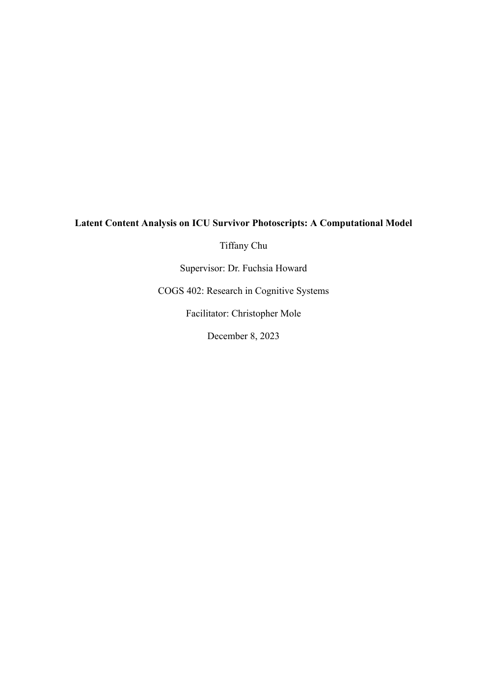
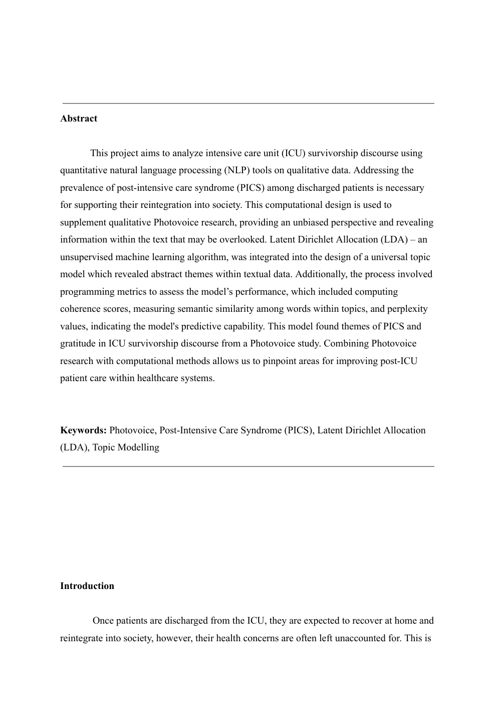
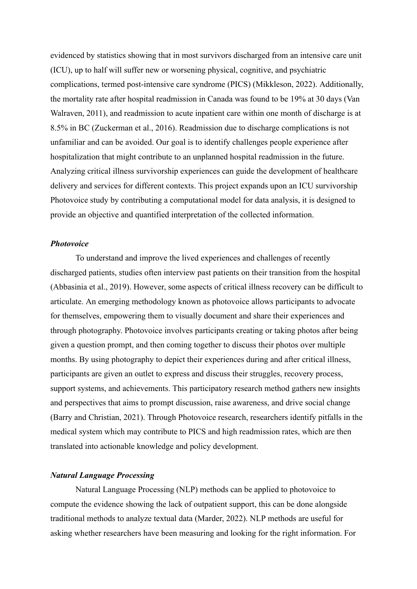
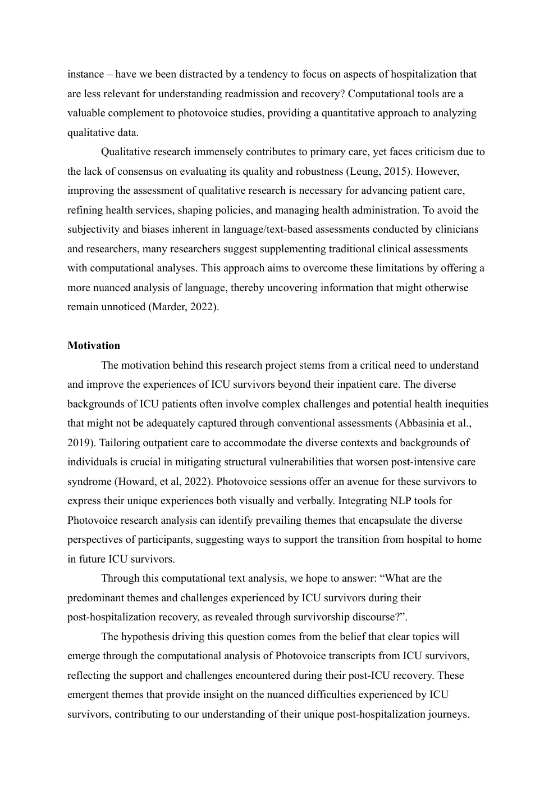
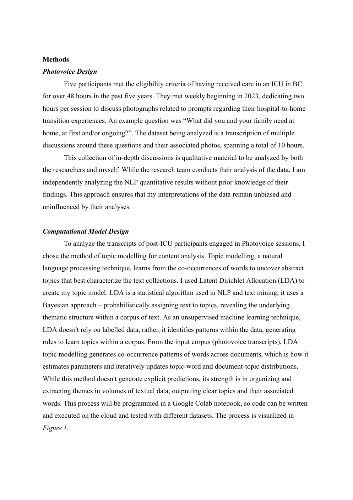
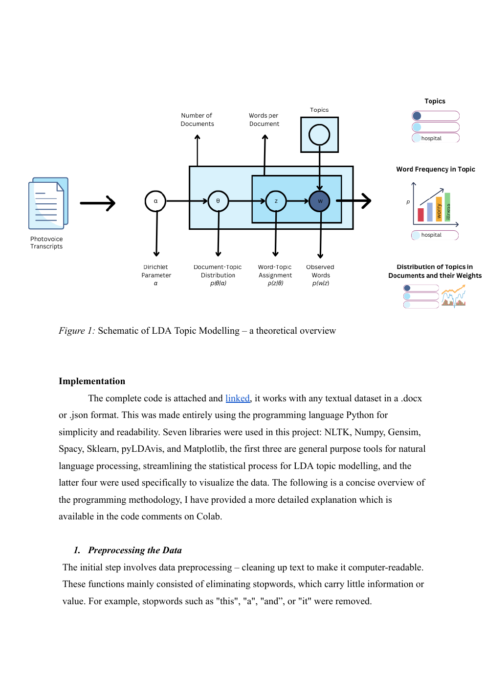
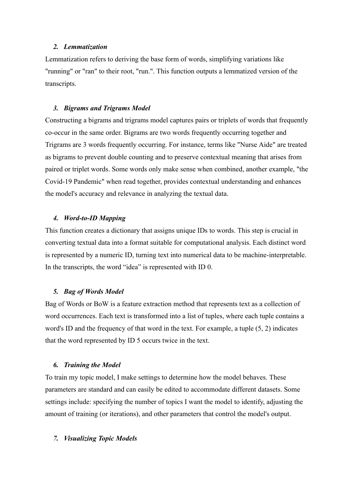
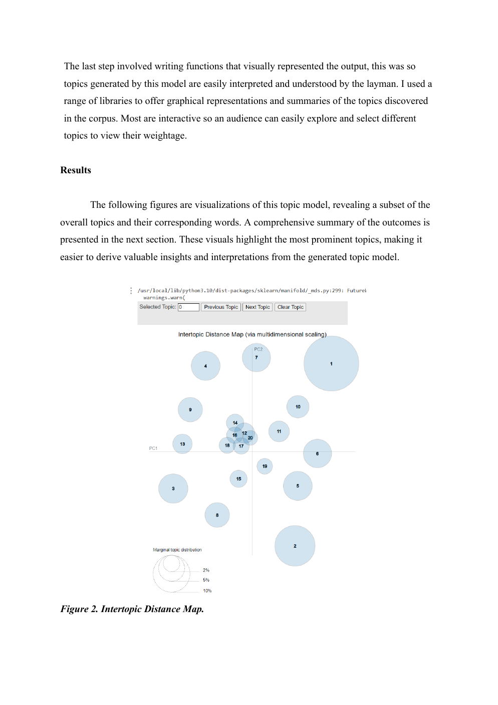
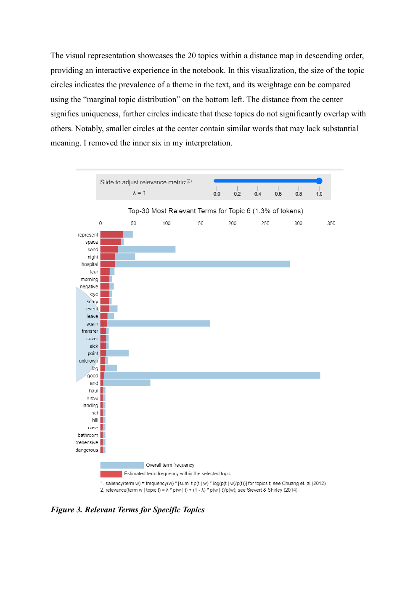
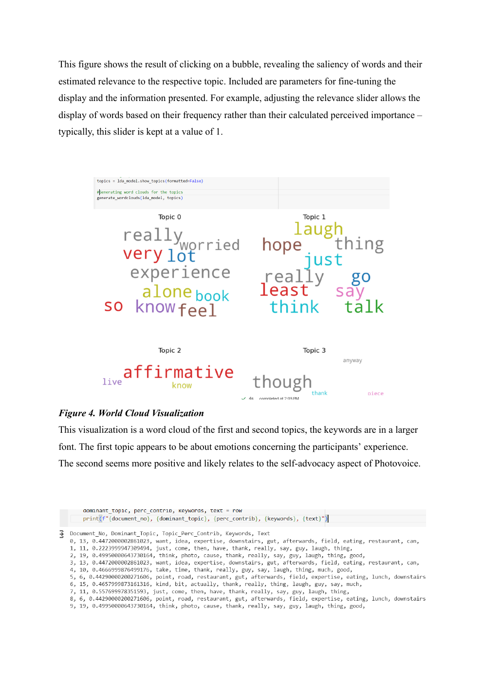
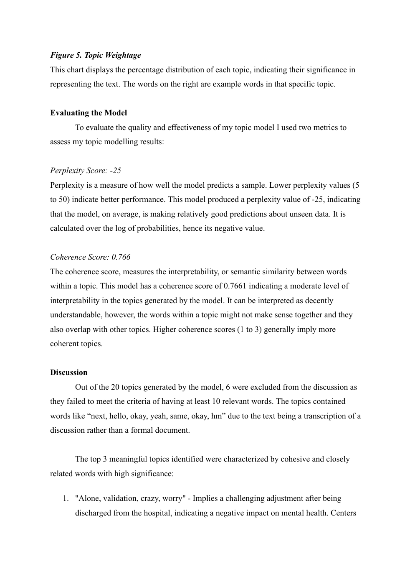
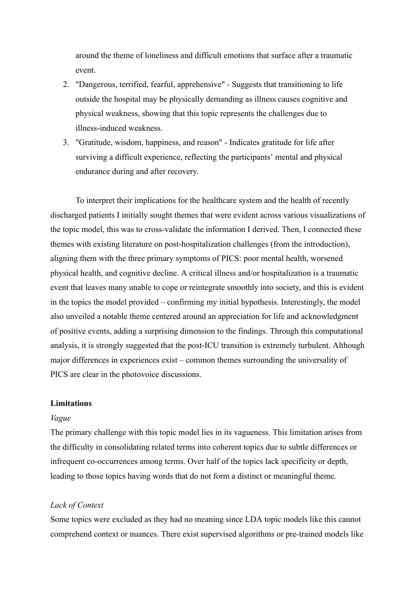
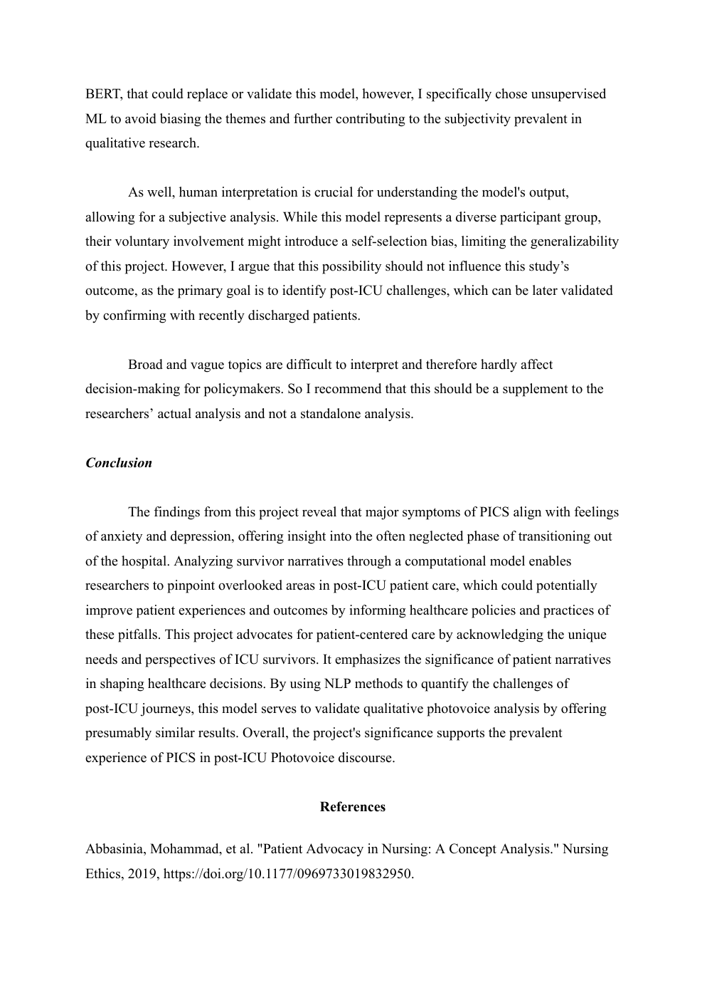
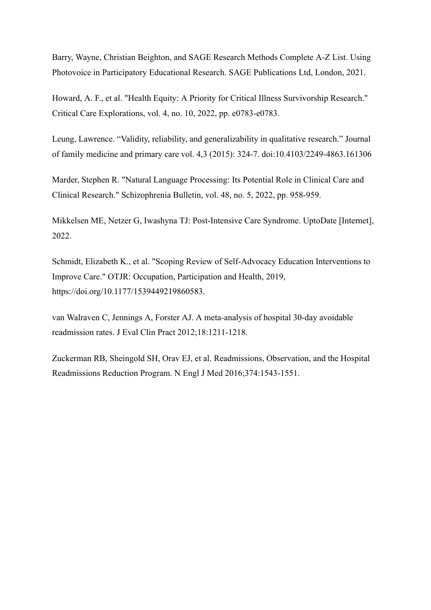